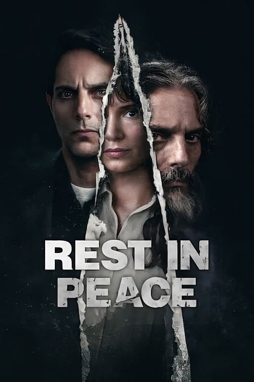

Rest in Peace (2024)
الوصف: A debt-ridden father takes advantage of an unforeseen situation to disappear and live off the grid under a false identity. But a chance event occurs and the temptation to want to know his family resurfaces.
الممثلون
- Joaquín Furriel (Sergio Dayan / Nicolás Nieto)
- Griselda Siciliani (Estela Dayan)
- Gabriel Goity (Hugo Brenner)
- Lali González (Ilu)
- Luciano Borges (Raúl)
- Raúl Daumas (Ruben "El Gordo")
- Alicia Guerra (Beatriz)
- Macarena Suárez Dagliano (Florencia (2009))
- Juan Cottet (Matías (2009))
- Zoe Kunischi Segovia (Florencia (1994))
المخرج: Sebastián Borensztein
المنتج: Ezequiel Crupnicoff